Campus de Ker Lann rue Blaise Pascal BP37203 35172 BRUZ CEDEX Tél
: +33 (0) 2 99 05 32 32 communication@ensai.fr www.ensai.fr
ENSAI
Rapport Final
Sujet : API de calcul de DJU
Groupe 12 : Aziz Yousfi Eudes Sterlin Gabriel
Dahan Gwenaël Lassalle Marceau Feral
Tuteur : Thierry Mathé
ENSAI 2026–2027
1. Synthèse du projet
Les degrés-jours unifiés mesurent, pour un lieu et une période,
l’écart entre la température extérieure et un seuil choisi. Ils
constituent un indicateur de la demande théorique de chauffage ou de
climatisation. Notre projet transforme ce calcul, initialement simple
pour une station, en un service automatisé accessible par API REST pour
des coordonnées géographiques ou des territoires entiers.
L’application repose sur Python, FastAPI et PostgreSQL. Les séries
Météo-France sont préparées hors ligne, nettoyées puis chargées en base.
Les températures locales sont estimées grâce aux stations voisines, à la
distance de Haversine et à une pondération inverse du carré de cette
distance. Les calculs sur des communes peuvent ensuite être agrégés à
l’échelle de départements et de régions.
Ce que l’équipe a
effectivement réalisé
Un pipeline de données depuis les relevés météo et le référentiel
des communes jusqu’au stockage SQL.
Deux parcours de calcul : un point GPS et un territoire, avec
regroupement temporel quotidien, hebdomadaire, mensuel ou
annuel.
Des routes de consultation des zones, des zonages personnels, de
l’authentification et de l’import CSV/JSON.
Des tests unitaires, tests de services et tests HTTP structurés,
ainsi qu’une documentation de lancement.
L’apport du projet dépasse la formule du DJU : il réside dans la
fiabilité des données amont, la séparation des responsabilités, le
contrôle des droits et la capacité à éviter des traitements
redondants.
Positionnement
Le projet n’est ni une plateforme de prévision météorologique ni,
dans la version étudiée, un outil complet de correction des
consommations énergétiques. Il fournit d’abord les indicateurs DJU qui
pourraient alimenter une telle analyse dans un second temps.
Le parcours complet d’une requête explicite la difficulté technique :
l’utilisateur exprime une question métier par des coordonnées ou un
identifiant de territoire ; le contrôleur vérifie sa forme ; un service
recherche la période effectivement couverte ; le moteur reconstitue des
températures cohérentes ; les objets métier calculent et regroupent les
indicateurs ; la réponse transporte également la qualité des
observations. Chaque étape est nécessaire pour que la valeur finale soit
interprétable, et non seulement calculable.
Le dossier d’analyse intermédiaire servait de modèle de conception.
Le rapport final prend une autre posture : il confronte systématiquement
les fonctionnalités prévues aux chemins de code effectivement présents.
Cette évolution est essentielle dans un projet collectif, où une
décision pertinente au début peut être révisée lors de l’intégration.
L’intérêt pédagogique réside autant dans la justification de ces
révisions que dans la restitution de l’architecture retenue.
2. Enjeux métiers et
définition des DJU
Les DJU quantifient l’écart thermique d’une journée par rapport à un
seuil conventionnel. Les DJU de chauffage augmentent lorsque la
température moyenne passe sous le seuil de chauffage ; les DJU de
climatisation augmentent lorsqu’elle dépasse le seuil de climatisation.
Ils décrivent une sollicitation climatique potentielle et ne mesurent ni
directement des kWh, ni une facture énergétique.
La température moyenne conventionnelle d’une journée est calculée par
:
\[
T_m = \frac{T_{\min} + T_{\max}}{2}.
\]
Pour un seuil de chauffage \(S_c\)
et un seuil de climatisation \(S_f\),
les DJU sont définis par :
Une journée dont la température moyenne est égale au seuil fournit
zéro DJU.
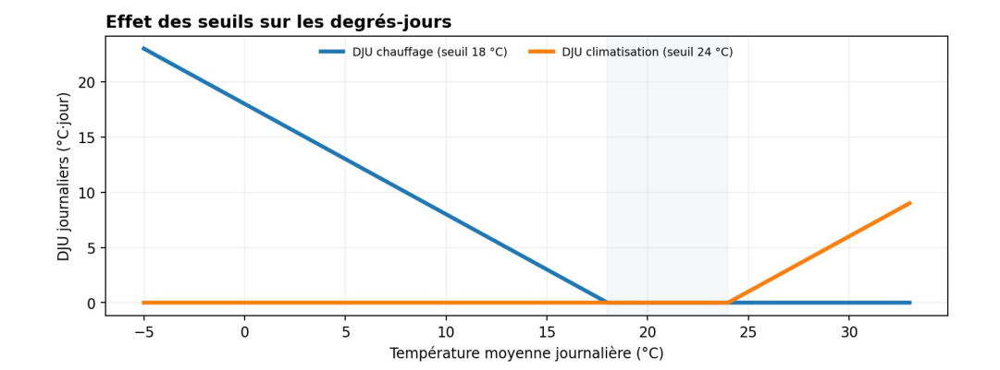
Réponse des deux indicateurs à la
température moyenne (seuils illustratifs).
Le seuil est la température de référence au-delà (chauffage) ou en
deçà (climatisation) de laquelle la demande conventionnelle
correspondante est nulle. Il n’est pas estimé à partir des stations : il
est choisi par le demandeur et transmis dans DjuPointRequest ou
DjuZoneRequest. Le sujet rappelle que le SDES emploie un seuil de
chauffage de 15 °C depuis 2023, contre 17 °C auparavant ; 18 °C reste un
exemple illustratif, non une valeur imposée par notre API.
Un DJU est donc un indicateur conventionnel, non une mesure directe
des besoins énergétiques réels d’un bâtiment. Deux logements situés au
même endroit peuvent avoir les mêmes DJU et pourtant consommer très
différemment en raison de leur isolation, de leur système de chauffage
et de leurs usages. La méthode fournit une variable explicative
climatique, qu’il faudrait articuler avec les données de consommation
pour calculer une correction des variations climatiques au sens
économique.
Pour un ensemble de jours, le cumul ne consiste pas à appliquer une
seule fois la formule à la température moyenne de toute la période. Il
faut d’abord évaluer l’écart au seuil chaque jour, puis sommer les
écarts positifs. Cette distinction est importante : les journées chaudes
et froides ne doivent pas se compenser artificiellement. Les deux modes,
chauffage et climatisation, utilisent des seuils distincts et sont
calculés indépendamment lorsque les deux sont demandés.
3. Cahier des charges :
acteurs et besoins
Le cahier des charges fixe cinq fonctionnalités de base : F0
(préparation de la base), F1 (DJU ponctuel), F2 (consultation des zones
officielles), F3 (DJU d’un territoire) et F4 (zonages personnels). Une
requête de calcul délimite explicitement les dates de début et de fin,
choisit au moins un seuil thermique, un pas de temps et une
localisation. Les données chargées depuis 1990 représentent la fenêtre
de référence potentielle ; l’intervalle demandé est une autre période,
pouvant être plus court ou partiellement hors couverture.
Trois profils, deux niveaux
d’accès
Utilisateur public : calcul ponctuel, calcul sur territoire
officiel et consultation des zones disponibles.
Utilisateur authentifié : mêmes droits, plus création, import,
modification et suppression de ses propres ensembles de
communes.
Responsable de l’alimentation (appelé « administrateur » dans les
cas d’utilisation) : prépare les fichiers et peuple PostgreSQL via les
scripts data/*.py, avant les appels aux routes métier ; ce
rôle n’est pas un compte « administrateur » exposé par l’API.
Contraintes retenues
Dimension
Exigence
Solution retenue
Précision spatiale
Point arbitraire
Interpolation à partir des stations
proches
Période
Jours à années
Agrégation et bornes calendaires
Fiabilité
Relevés incomplets
Comblement et suivi de provenance
Volume
Millions d’observations
Parquet hors ligne et PostgreSQL
Sécurité
Zonages privés
JWT et vérification de propriété
Réutilisation
Calculs territoriaux coûteux
Cache de résultats en base
Le cœur du projet est le passage d’une spécification statistique à
une application cohérente, capable d’expliquer les données utilisées et
de renvoyer des erreurs prévisibles.
La distinction entre période de données et période demandée est
déterminante. La première est contrainte par la disponibilité des
relevés chargés ; la seconde relève du choix du client. L’implémentation
conserve leur intersection et la signale dans un champ warning si elle
est plus courte que prévu. Cette politique rend la requête exploitable
tout en évitant de promettre des valeurs sur des jours absents de la
base. Si l’intersection est vide, le service refuse le calcul.
Le nombre de stations et la prise en compte de l’altitude jouent un
double rôle : ce sont des paramètres scientifiques qui modifient
l’estimation, et des paramètres informatiques qui déterminent le coût du
traitement et, pour un résultat territorial, son identité dans le cache.
Ils ne doivent donc pas être laissés implicites dans la documentation de
l’API. Le même couple lieu–dates peut produire plusieurs réponses
justifiées selon les paramètres retenus.
4. Fonctionnalités et
priorisation
Nous présentons ci-dessous les exigences en termes d’entrées, de
résultats et de dépendances. F0 fournit les données à toutes les autres
fonctions ; F1 calcule en un point, F2 découvre les territoires, F3
agrège les communes et F4 organise les zones privées. La priorité
accordée aux options était FO1 (cache des résultats zonaux), puis FO3
(import de zonages) et enfin FO2 (formats JSON/CSV). Les trois options
disposent aujourd’hui de code, dans les limites précisées au chapitre
19.
Code
Fonction
Statut observé dans le code
F0
Préparation météo, communes et SQL
Scripts dédiés et testés
F1
DJU pour un point GPS
Service et route implémentés
F2
Liste et détail des zones officielles
Routes implémentées
F3
DJU pour région, département ou
zonage
Service avec cache territorial
F4
Zonages personnalisés
CRUD protégé par authentification
FO1
Persistance et cache
Résultats des zones, point non
persisté
FO2
Format des sorties
JSON et CSV
FO3
Import de zonage
CSV et JSON transmis dans le corps
JSON
Pourquoi cet ordre ?
F0 conditionne le calcul des températures ; F1 valide le moteur
élémentaire avant F3, qui ajoute les contraintes territoriales et les
pondérations. Les fonctionnalités F2 et F4 reposent sur la disponibilité
du référentiel communal. Les formats de sortie et l’import enrichissent
enfin des traitements déjà testables.
La conception initiale prévoyait deux niveaux de cache.
L’implémentation l’a restreint : DjuService.calculate_point_dju crée des
résultats sans stockage, tandis que calculate_zone_dju relit ou
enregistre les calculs par sous-zone. La classe
MunicipalityTemperatureDao subsiste, mais
TemperatureService.get_municipality_temperatures ne l’utilise pas : on
ne peut pas annoncer un cache communal opérationnel.
Le classement des exigences distingue les fonctionnalités visibles
d’une requête HTTP des contraintes transversales. L’import CSV/JSON et
la sortie CSV relèvent de l’ergonomie d’usage ; l’intégrité SQL, la
vérification du propriétaire et le suivi des valeurs manquantes relèvent
de la correction du service. Ces derniers points ne sont pas secondaires
: une API qui répond vite avec des données non fiables ne remplit pas sa
mission scientifique.
La matrice des fonctionnalités est donc lue avec prudence : le dépôt
prouve la présence des routes et des règles de calcul ; les tests les
documentent ; l’intégration sur données complètes doit encore être
reconfirmée sur le commit de remise. Cette distinction entre
fonctionnalité développée et validation mesurée sera reprise dans le
bilan.
5. Organisation du travail en
équipe
L’équipe de cinq élèves a utilisé un dépôt GitHub commun, des
fichiers de suivi hebdomadaire dans doc/tracking et une documentation
progressive en Markdown/Quarto. Le rapport intermédiaire a servi de base
conceptuelle ; l’implémentation a ensuite conduit à revoir certains
diagrammes et à distinguer les fonctionnalités souhaitées des
fonctionnalités réellement codées.
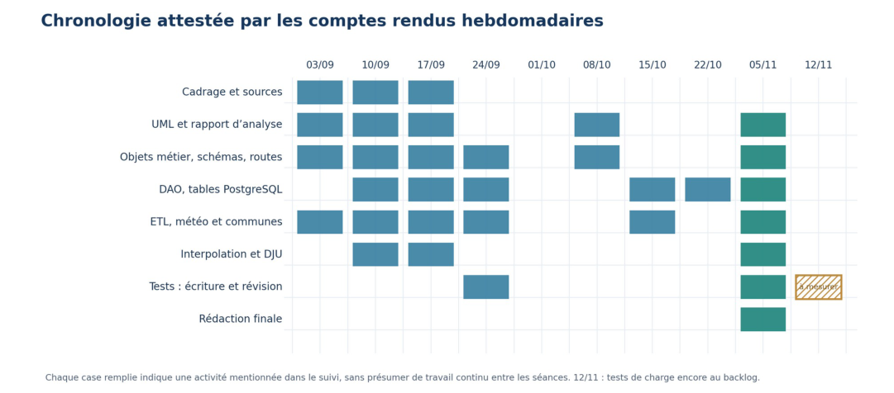
Gantt rétrospectif des contributions,
d’après les comptes rendus hebdomadaires. Les cases représentent des
activités mentionnées, non des durées mesurées.
Répartition documentée
des réalisations
Membre
Contributions relevées dans le suivi du 5
novembre
Mohamed Aziz Yousfi
Refonte des calculs DJU et tests d’objets
métier
Eudes Sterlin
Schéma SQL, mise à jour des diagrammes et
audit de l’état du code
Gabriel Dahan
Services, routes, authentification,
zonages, cache zonal et DAO
Gwenaël Lassalle
Mise en page du rapport et chargement de
la base distante
Marceau Feral
Chaîne de données, tests et vectorisation
des calculs sur zones
Ces attributions sont celles que l’équipe a consignées, et non une
évaluation individuelle. Les échanges autour du code, l’harmonisation du
modèle SQL et l’intégration des services illustrent la dépendance réelle
entre les tâches.
Les bilans hebdomadaires montrent un développement itératif :
premières routes et objets métier en septembre ; stabilisation du SQL,
des DAO et des schémas en octobre ; intégration des traitements
vectorisés, des formats et de l’authentification début novembre. Les
tâches ont été croisées : une modification de modèle impactait
fréquemment d’autres modules.
La principale difficulté organisationnelle a été la synchronisation
entre code, tests, SQL et diagrammes, sans quoi plusieurs modules
décrivaient des signatures incompatibles. Le travail transversal de
revue et d’intégration apparaît ainsi comme une contribution technique à
part entière.
6. Architecture logicielle
en couches
Les composants réels sont identifiés par leur rôle et par leur nom.
Les schémas DjuPointRequest et DjuZoneRequest valident les paramètres
reçus par dju_controller.py ; DjuService orchestre les fonctions F1 et
F3 ; TemperatureService.find_candidate_stations et
estimate_daily_temperatures estiment les températures.
DjuCalculation.run et run_for_zone appliquent les règles mathématiques.
Les DAO lisent et écrivent PostgreSQL ; les scripts data/ préparent les
tables avant le lancement des calculs. Les objets métier n’exécutent pas
eux-mêmes de SQL.
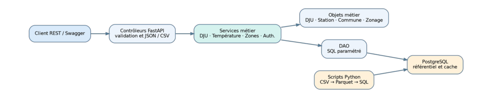
Architecture logique de l’application
DJU.
Responsabilités observées
Le chemin suivi par F1 est explicite : requête HTTP \(\rightarrow\) DjuPointRequest \(\rightarrow\)
DjuService.calculate_point_dju \(\rightarrow\) TemperatureService \(\rightarrow\) TemperatureReportDao \(\rightarrow\) DjuCalculation.run \(\rightarrow\) DjuResponse. Pour F3,
DjuService demande à ZoneService de vérifier le territoire et les
droits, consulte DjuDao.find_calculation, puis n’appelle
TemperatureService et DjuCalculation.run_for_zone qu’en l’absence de
résultat stocké. Les réponses sont construites par les contrôleurs, en
JSON ou CSV.
Cette architecture rend possibles les tests isolés : plusieurs suites
remplacent les DAO ou les services par des objets factices. Elle limite
aussi la propagation d’un changement de schéma HTTP dans les algorithmes
scientifiques.
La séparation des couches limite les dépendances croisées. Ainsi, le
contrôleur n’a pas à construire des requêtes SQL, et l’objet DjuType n’a
pas à connaître la structure JSON d’une réponse FastAPI. Les services
constituent le point d’orchestration : ils interprètent la demande,
appellent les DAO et demandent aux objets métier de calculer les
valeurs. Cette distribution rend possible le remplacement de dépendances
par des faux objets dans les tests, et facilite le diagnostic lorsqu’une
requête échoue.
L’API est montée dans main.py par inclusion de plusieurs routeurs :
/dju, /zones, /user et /user/zones. Le même point d’entrée configure
l’environnement et expose une route /health pour vérifier la
disponibilité du processus. La documentation interactive est fournie
automatiquement par FastAPI. Il faut cependant distinguer la santé du
processus et la santé de toute la chaîne : une réponse positive de
/health ne démontre pas que la base distante possède toutes les
observations nécessaires au calcul.
7. Constitution du jeu de
données
Deux chaînes d’alimentation indépendantes sont exécutées avant le
service en ligne. La chaîne météo lit les fichiers CSV.gz Météo-France,
filtre les dates à partir de 1990 et les colonnes NUM_POSTE, DATE,
TN/TX, LAT/LON et ALTI, puis produit un Parquet brut et un Parquet
nettoyé avec TMIN/TMAX et leur provenance. La chaîne administrative
interroge les API publiques pour obtenir le code INSEE, la région, le
département, les coordonnées, la population et l’altitude des communes ;
elle produit ses propres fichiers Parquet. Seul le chargement SQL final
rassemble les deux sources.
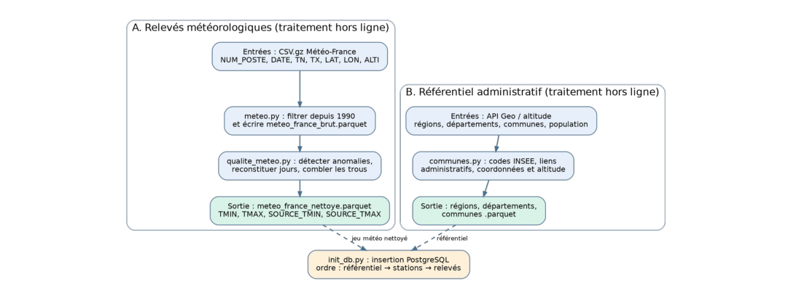
Deux traitements F0 distincts : entrées,
fichiers intermédiaires et insertion SQL finale.
Un stockage adapté aux
usages
Le Parquet est un format de travail efficace pendant le nettoyage
massif. PostgreSQL devient ensuite la source interrogée par l’API ; il
conserve les stations, relevés, communes, zonages, types et résultats
des DJU. Le script init_db.py charge les tables selon le schéma défini
et utilise ON CONFLICT DO NOTHING pour éviter la réinsertion de lignes
identiques.
Le compte rendu du 5 novembre mentionne un chargement de 4 555
stations et d’environ 32 millions de relevés sur la base distante. Ce
chiffre provient du suivi interne ; il n’a pas été revérifié par une
requête directe dans cette rédaction.
La conversion intermédiaire en Parquet répond au caractère massif des
archives. Les scripts de traitement peuvent manipuler des colonnes
homogènes sans reparcourir chaque CSV compressé lors d’un nouveau
chargement de base. Ce stockage est une étape d’alimentation, pas le
support unique des requêtes en ligne : les DAO de l’application
exploitent principalement PostgreSQL pour retrouver stations,
observations, zones et résultats conservés. La distinction entre
traitement hors ligne et service en ligne évite de placer les
téléchargements météorologiques dans le chemin critique d’une requête
utilisateur.
L’ordre de chargement est aussi une condition d’intégrité. Les
régions doivent exister avant les départements, les départements avant
les communes, et les stations avant leurs relevés. Le script init_db.py
matérialise cet ordre et utilise des insertions par lots pour la
volumétrie. Les contraintes de clés étrangères, d’unicité et les clauses
ON CONFLICT empêchent des incohérences évidentes lors d’une relance.
Cela ne remplace toutefois ni la supervision de l’alimentation ni une
validation statistique des données importées.
8. Fiabilisation des
relevés météorologiques
La qualité est traitée hors ligne par qualite_meteo.py, avant
l’insertion dans PostgreSQL et avant tout calcul F1/F3. Une mesure Tmin
ou Tmax hors de \([-50 ; +50]\) °C est
remplacée par une valeur manquante : le script n’élimine pas
systématiquement toute la série de la station. Il écarte les lignes sans
aucune température (stations ne mesurant par exemple que la pluie), puis
réindexe chaque station sur un calendrier quotidien. Les anomalies et
les manques sont traités séparément pour Tmin et Tmax. Les règles de
couverture minimale à 65 %, de stations doublonnées à 500 m et de
température constante pendant 30 jours évoquées dans la conception
intermédiaire ne sont pas démontrées dans le script actuel : elles ne
sont donc pas présentées ici comme implémentées.
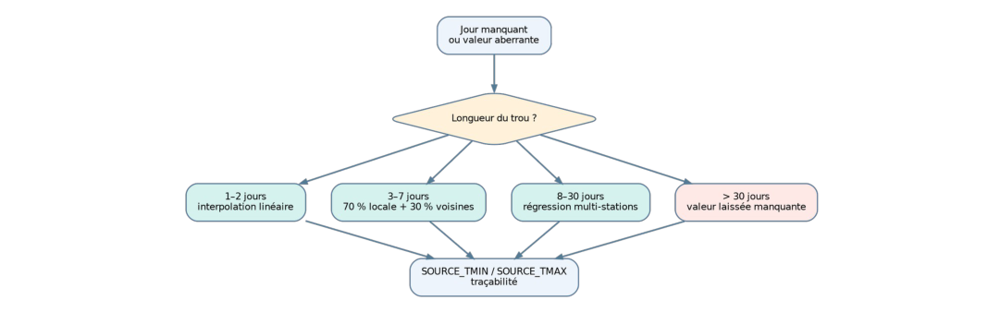
Décision de comblement appliquée selon la
longueur initiale du trou.
La stratégie est déterminée automatiquement par la longueur initiale
du trou : de 1 à 2 jours, interpolation linéaire ; de 3 à 7 jours,
combinaison de 70 % de tendance locale et de 30 % de stations voisines
corrigées d’un écart moyen ; de 8 à 30 jours, régression multistation si
les données disponibles suffisent ; au-delà de 30 jours, les valeurs
manquantes sont conservées. Cinq stations voisines au maximum, dans un
rayon de 50 km, peuvent participer. Ce n’est pas un paramètre que
choisit l’utilisateur de l’API au moment du calcul DJU.
Après comblement, une estimation causant Tmin > Tmax est écartée
sans supprimer automatiquement toute la station. La sortie nettoyée
distingue SOURCE_TMIN et SOURCE_TMAX et permet à TemperatureReportDao de
calculer observed, vrai uniquement si les deux valeurs sont réellement
observées. DjuResult.observed_ratio donne ensuite la part de jours du
résultat reposant exclusivement sur des mesures observées ; il ne
constitue pas un intervalle d’incertitude statistique.
Un calendrier quotidien complet est reconstruit pour chaque station.
Cela permet de distinguer l’absence d’une ligne entière d’une
température nulle ou manquante, puis de calculer sans ambiguïté la
longueur des trous. La méthode de comblement dépend de cette longueur
initiale et non du nombre de lignes disponibles dans le fichier
brut.
SOURCE_TMIN et SOURCE_TMAX tracent séparément les observations et les
imputations. Le booléen observed n’est vrai que si Tmin et Tmax sont
mesurées, pour chaque contribution utilisée ; observed_ratio en résume
la proportion par période. Ce n’est pas une mesure d’incertitude.
9. Référentiel
géographique et modèle SQL
Le modèle relationnel est une représentation des vraies tables de
data/init_db.sql. Son noyau territorial suit la hiérarchie
regions, departments, puis
municipalities : chaque table possède une clé primaire
id, et les codes INSEE sont uniques. La table
zoning_municipalities réalise la relation plusieurs-à-plusieurs entre
communes et zonages. Les tables meteo_stations et temperature_reports
conservent des observations datées ; dju_types, dju_calculations et
dju_results conservent les paramètres et sorties des calculs
territoriaux.
Un relevé météorologique contient date, station_id, temp_min,
temp_max et deux informations de provenance source_tmin et source_tmax ;
l’unicité (station_id, date) évite les doublons. Pour un calcul
territorial, la paire (mode, base_temperature) identifie un type de DJU,
et les lignes de dju_results enregistrent period_start, period_end,
value, days_with_data et observed_ratio. Le schéma dessiné est celui qui
existe dans le code, pas une base conceptuelle projetée.
Le fichier SQL actuel ne crée pas de table municipality_temperatures
alors qu’une DAO portant ce nom subsiste dans le dépôt : le cache de
séries communales apparaît donc comme une extension non raccordée dans
la branche examinée.
Le schéma relationnel distingue plusieurs cardinalités : une région
contient plusieurs départements ; un département regroupe des communes ;
une station porte plusieurs relevés datés ; un utilisateur possède
plusieurs zonages ; un zonage relie plusieurs communes par une table
d’association. Cette dernière relation évite de recopier les
caractéristiques d’une commune à chaque création de zone personnalisée.
Une même commune peut appartenir à plusieurs ensembles sans duplication
de sa géométrie, de son code INSEE ou de sa population.
La table dju_calculations conserve le contexte d’un calcul
territorial : sous-zone, seuil via la table dju_types, période, pas
temporel, nombre de stations et correction d’altitude. Les lignes de
dju_results stockent les résultats par période et les indicateurs de
couverture. Ce découpage sépare ce qui est constant sur la requête des
valeurs produites pour chaque période. Dans le schéma inspecté, la table
municipality_temperatures n’est pas créée : cette différence avec la
conception initiale explique l’absence de réutilisation active des
séries communales.
10. Estimation spatiale
des températures
Les entrées du traitement spatial sont un dictionnaire locations :
{identifiant_du_lieu : (latitude, longitude, altitude_ou_None)}, le
nombre de stations N de 1 à 10 et la période de dates.
TemperatureService.find_candidate_stations sélectionne les stations
parmi au plus 50 candidates par lieu et fait lire leurs observations par
TemperatureReportDao.get_reports_dataframe ; seules les stations ayant
des relevés sur la période sont retenues. La sortie intermédiaire
associe à chaque station/date une température moyenne (Tmin + Tmax)/2 et
une provenance observée ou imputée.
La fonction Haversine mesure la distance dᵢ (km) entre le lieu et la
station i. Les poids spatiaux sont wᵢ = 1/max(dᵢ, 0,01 km)² et ne
dépendent pas de la date ; ils sont donc calculés une fois par lieu. La
température estimée au jour t est T̂(t) = Σᵢ wᵢ(t) × Tᵢ,corrigée(t) / Σᵢ
wᵢ(t), les poids des stations sans valeur étant exclus ce jour-là. La
sortie est un couple de DataFrame Pandas indexés par date, avec une
colonne par lieu : température estimée et indicateur observed.
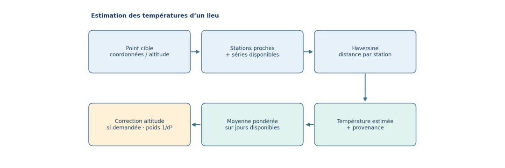
Chaîne d’estimation et de correction d’un
point géographique.
Correction altimétrique
Lorsque l’altitude cible est fournie, la température de chaque
station est ramenée au niveau du lieu cible selon la formule :
où les altitudes sont exprimées en mètres. Sans altitude cible,
aucune correction n’est appliquée. Cette simplification est conforme au
sujet mais ne modélise pas les microclimats. Les opérations sont
vectorisées dans NumPy/Pandas : il n’existe pas de raison physique de
recalculer la distance ou le poids d’une station à chaque jour.
Les coordonnées latitude–longitude imposent une mesure de distance
sur la sphère : la méthode Haversine fournit le classement des
candidates. Une station est conservée seulement si elle possède des
relevés pendant la période demandée ; sinon, le service cherche une
remplaçante parmi les candidates suivantes. Une même station n’est lue
qu’une fois si elle dessert plusieurs communes du lot.
Pour chaque date, les poids sont renormalisés sur les seules stations
possédant une valeur : une observation absente ne doit pas rester dans
le dénominateur. Si aucune station utilisable n’a de valeur, la
température demeure manquante au lieu de prendre artificiellement la
valeur zéro.
11. Choix et robustesse
de l’interpolation
Le nombre de stations demandé peut aller de 1 à 10 ; trois stations
constituent la valeur par défaut. Pour chaque lieu, le code examine au
maximum 50 stations candidates, ordonnées par proximité. Lorsqu’une
station n’a aucun relevé durant la période, elle est remplacée par une
station candidate suivante, si possible. Une même station partagée entre
plusieurs communes n’est chargée qu’une fois dans un lot de
requêtes.
Gestion des absences au
jour le jour
La sélection d’une station disponible sur la période ne garantit pas
une mesure chaque jour. La moyenne pondérée est donc recalculée, à
chaque date, sur les seules stations dont la température du jour est
renseignée. Si aucune n’est exploitable, la température estimée demeure
manquante ; elle n’est pas inventée à partir d’une station distante hors
du jeu sélectionné.
Le service renvoie également un booléen de provenance : un jour n’est
considéré comme entièrement observé que si toutes les températures
effectivement utilisées proviennent de mesures observées. Cette
information devient observed_ratio après agrégation des DJU.
Principaux compromis
Choix
Bénéfice
Limite
Pondération 1/d²
Favorise les stations proches
Sensible à la densité locale
N = 3 par défaut
Coût raisonnable
Sous-échantillonnage possible
Correction 0,65 °C / 100 m
Prend en compte le relief
Gradient atmosphérique simplifié
Calculs vectorisés
Moins de boucles Python
Mémoire proportionnelle au lot
Un poids inversement proportionnel au carré de la distance favorise
fortement les stations proches tout en permettant de mobiliser une
observation plus éloignée lorsque la plus proche est indisponible. Pour
éviter une division par zéro au droit même d’une station, le code borne
la distance à une petite valeur positive. Ce mécanisme est un choix de
robustesse numérique ; il ne transforme pas automatiquement le modèle en
mesure parfaite au point cible. Un contrôle de sensibilité sur
différents nombres de stations resterait utile pour évaluer son
impact.
La correction altimétrique repose sur un gradient fixe : pour une
différence de 200 mètres entre la station et le lieu plus élevé, la
température est diminuée de 1,3 °C. L’ordre des opérations a son
importance : chaque température de station est d’abord ramenée à
l’altitude cible, puis la moyenne pondérée est calculée. L’hypothèse de
gradient constant est explicite et facile à reproduire, mais elle est
moins adaptée aux inversions thermiques et aux situations locales
complexes. Il s’agit d’un compromis entre simplicité, données
disponibles et coût du calcul.
12. Calcul et agrégation des
DJU
La classe DjuType calcule les DJU quotidiens. La classe
DjuCalculation les rassemble par période de calendrier : jour, semaine
ISO (lundi à dimanche), mois ou année. Les bornes de chaque résultat
sont ramenées à l’intervalle réellement demandé. Un mois commencé le 10
n’est donc présenté qu’à partir du 10, même si son cadre calendaire est
plus large.
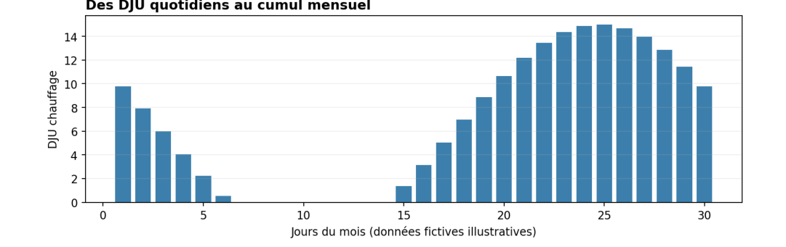
Exemple fictif : distribution des DJU
quotidiens avant leur cumul mensuel.
Agrégation spatiale
Pour les territoires, chaque commune obtient un DJU par jour. À la
date t, la moyenne de la zone est pondérée par la population des
communes pour lesquelles une valeur existe : DJUzone(t) = Σ populationᵢ
× DJUᵢ(t) / Σ populationᵢ. Les communes sans population renseignée sont
écartées, sauf si toutes les populations sont absentes ou nulles : une
moyenne simple est alors utilisée.
Le système somme ensuite les DJU zonaux sur le pas de temps demandé
et renvoie pour chaque période days_with_data et observed_ratio. Il ne
remplace pas implicitement les journées manquantes par zéro.
Les regroupements temporels sont définis à partir du calendrier, non
de la position du premier relevé disponible. Une requête couvrant du 10
au 25 février doit donc conserver ces bornes dans le résultat de
février, même si certaines journées n’ont pas pu être évaluées. Pour une
semaine, la convention ISO signifie du lundi au dimanche, avec bornes
réduites à l’intervalle demandé. Ces règles évitent de faire passer une
somme sur vingt jours pour un cumul mensuel intégral.
Pour l’agrégation spatiale, une commune sans population exploitable
reçoit un poids nul lorsque d’autres poids existent. Si toutes les
populations sont absentes ou égales à zéro, le système bascule vers une
moyenne simple : ce cas dégénéré est traité explicitement dans les
tests. Une autre subtilité est la disponibilité quotidienne : le
dénominateur pondéré ne comprend que les communes ayant une valeur ce
jour. L’agrégation porte donc sur la partie effectivement observable du
territoire et l’absence de données doit être signalée par les
indicateurs de couverture.
13. F1 : DJU ponctuel par API
F1 reçoit un DjuPointRequest : latitude comprise entre
-90 et 90, longitude entre -180 et 180, altitude facultative,
start_date, end_date,
heating_threshold et/ou cooling_threshold,
number_of_stations compris entre 1 et 10 (défaut : 3), et
time_step parmi day, week,
month, year (défaut : day).
Pydantic produit 422 si un champ est mal formé ;
DjuService._check_request renvoie 400 si les dates sont inversées ou si
les deux seuils sont absents, puis intersectionne la période demandée
avec les dates disponibles.
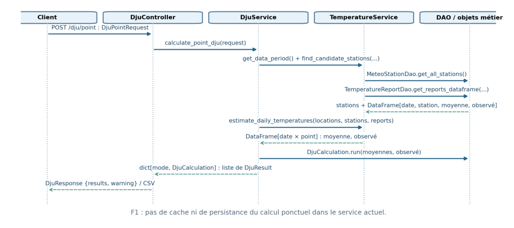
Séquence F1 : objets, méthodes et
structures échangées entre les couches.
La fonction TemperatureService.estimate_daily_temperatures renvoie
deux séries utiles à DjuCalculation.run : les moyennes quotidiennes et
le booléen de provenance. Une unique estimation est réutilisée si
chauffage et climatisation sont demandés ensemble ; si seul
cooling_threshold est fourni, aucun calcul de chauffage n’est exécuté.
La sortie DjuResponse regroupe les DjuResult par mode et porte warning
lorsque la période a été raccourcie. F1 n’écrit pas de cache de
résultats en base.
Exemple de demande
Sur un calcul ponctuel, la route ne reçoit aucun identifiant de zone
: l’API crée un objet DjuCalculation portant directement les coordonnées
et les paramètres de l’estimation. La recherche des stations et la
lecture des séries sont mutualisées pour les deux modes ; seules les
formules de seuil divergent ensuite. Cette mutualisation réduit le coût
d’un calcul demandant simultanément chauffage et climatisation,
puisqu’il n’est pas nécessaire d’exécuter deux recherches géographiques
indépendantes.
L’interface repose sur des types explicites : date au format ISO,
seuil numérique, nombre de stations borné, choix du pas parmi day, week,
month et year. Une erreur sur un champ est rejetée automatiquement par
Pydantic, tandis qu’une incohérence entre plusieurs champs fait l’objet
d’une règle dans le service. Cette distinction illustre un principe de
conception réutilisable : la validation syntaxique relève du contrat
d’entrée et la validation métier relève de la couche qui détient la
règle scientifique.
14. Démonstration
documentée du calcul ponctuel
Cette démonstration distingue trois niveaux de preuve : le contrat de
requête, la formule numérique et le résultat JSON attendu. La réponse
ci-dessous est calculée sur un JEU SYNTHÉTIQUE (températures
explicitement posées) : ce n’est ni une capture d’un serveur distant ni
une mesure effectuée sur les relevés PostgreSQL. Le code qui définit la
structure est api/src/schema/dju_schema.py et
api/src/controllers/dju_controller.py.
Prenons les températures moyennes journalières conventionnelles 8 °C
et 15 °C ; supposons que le premier jour repose intégralement sur des
mesures observées et que le second comporte au moins une valeur imputée.
Les DJU de chauffage valent alors 10 et 3, ceux de climatisation valent
0 et 0. La réponse ci-dessous illustre les champs réellement définis par
DjuResultItem et DjuResponse.
Interprétation : days_with_data indique les dates
effectivement calculées ; observed_ratio porte sur la proportion de ces
dates construites exclusivement à partir de mesures observées. Si
l’utilisateur ne transmet que cooling_threshold, la clé heating
n’apparaît pas. Si la période demandée dépasse la disponibilité globale
des relevés, la date est réduite et warning l’explique.
15. F2 : Consultation des
zones officielles
La route GET /zones permet de lister les régions, les départements ou
les deux, via type=region, type=department ou type=all. Elle fournit
volontairement des objets légers : identifiant, nom, type et code INSEE.
Ce choix évite de transmettre d’emblée les milliers de communes
lorsqu’un client cherche simplement la zone souhaitée.
Consultation détaillée
La route GET /zones/{zone_type}/{zone_id} renvoie les communes d’une
région ou d’un département ciblé, avec leur nom et leur code INSEE. Les
types autorisés sont explicitement limités aux valeurs reconnues par la
route. Une zone inconnue produit une erreur 404 ; un type non valide est
rejeté au niveau de la validation.
Parcours utilisateur
Étape
Exemple
Information obtenue
1
GET /zones?type=region
Liste courte des régions
2
Choix d’un identifiant de région
Identifiant de la cible
3
GET /zones/region/{id}
Région et communes associées
4
POST /dju/zone
Calcul pour cette zone ou ses
subdivisions
Cette séparation entre liste et détail est un ajustement apporté au
modèle initial, dans lequel une liste exhaustive aurait rendu la réponse
inutilement volumineuse. L’API ne propose pas encore la recherche d’une
commune par son nom ; le suivi du 12 novembre la classe parmi les
améliorations secondaires.
La consultation des zonages officiels joue un rôle d’exploration
préalable. Le client commence par identifier un nom ou un code pertinent
dans une liste de régions et de départements ; il utilise ensuite
l’identifiant interne retourné pour demander le détail ou effectuer un
calcul territorial. Le choix de deux routes, liste et détail, évite
d’imposer à chaque consultation le transfert des listes communales
complètes. L’amélioration concerne donc la lisibilité des réponses comme
la maîtrise du volume JSON.
Le code INSEE représente une identité administrative stable à
l’échelle des données utilisées, tandis que l’identifiant numérique de
la base sert aux relations SQL et aux routes. Confondre ces deux valeurs
serait une source fréquente d’erreurs pour un client. La documentation
et les exemples doivent donc expliciter quel identifiant chaque chemin
attend. Une recherche textuelle de commune n’est pas exposée dans la
version inspectée ; son ajout améliorerait l’ergonomie sans modifier le
moteur de calcul DJU proprement dit.
16. F3 : DJU sur un territoire
F3 reçoit un DjuZoneRequest : zone_type = region, department ou
zoning ; zone_id = identifiant numérique interne, aggregation_level =
zone, department ou municipality ; dates, seuil(s), nombre de stations,
use_altitude et time_step. ZoneService.get_zone charge les communes (ou
vérifie la propriété du zonage personnel), puis get_sub_zones définit la
granularité de restitution. Entrée métier : un territoire et des
paramètres de calcul ; sortie : DjuZoneResponse contenant zones[], leurs
résultats par mode et un avertissement éventuel de période.
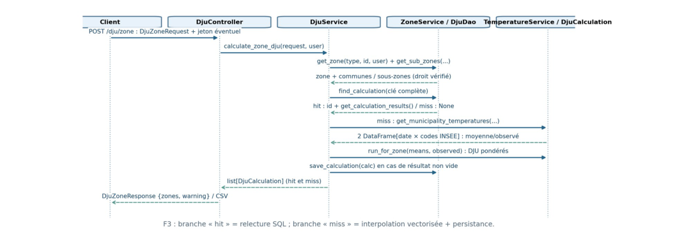
Séquence F3 : droits, identification des
sous-zones, cache et calcul spatial.
Pour chaque couple sous-zone/type de DJU, DjuDao.find_calculation
recherche un calcul de même zone, seuil, période, pas de temps, nombre
de stations et option d’altitude. En cas de succès,
get_calculation_results relit les DjuResult ; en cas d’absence,
TemperatureService.get_municipality_temperatures estime des tableaux
Pandas par commune, DjuCalculation.run_for_zone calcule la moyenne
pondérée et DjuDao.save_calculation enregistre le résultat. Cette
branche n’est parcourue que pour les calculs manquants.
Le découpage par département est refusé pour un zonage personnalisé,
car celui-ci n’est pas structuré par la même hiérarchie que les régions
officielles. Le contrôle de propriété d’un zonage personnel précède le
calcul afin d’éviter l’accès aux zones d’autrui.
Le calcul zonal prolonge le calcul en un point, mais son ordre de
grandeur diffère. Une région peut regrouper plusieurs milliers de
communes, chacune pouvant mobiliser plusieurs stations et des années de
mesures quotidiennes. Le code évite donc la succession naïve « une
commune, une requête SQL, un calcul complet » : il rassemble l’ensemble
des communes à calculer, récupère les stations et les relevés communs,
puis construit des tableaux de dates et de communes pour traiter les
agrégations avec NumPy et Pandas.
Pour chaque sous-zone et chaque seuil, DjuService construit une clé
complète de recherche du cache. Lorsqu’une valeur existe, les résultats
sont relus sans refaire l’estimation. Sinon, les températures sont
préparées, les DJU de chaque commune calculés et les résultats
territoriaux enregistrés. Les réponses regroupent les valeurs par
sous-zone et par mode. Cette organisation convient au traitement de
territoires composites, même si elle ne supprime pas le coût initial
potentiellement élevé d’un premier calcul sur une très grande
emprise.
17.
Démonstration territoriale et preuve de cohérence
Le parcours territorial ajoute deux opérations au calcul ponctuel :
la décomposition d’une zone et l’agrégation des communes pondérée par la
population. Le contrôle d’accès à un zonage personnalisé s’effectue
avant le calcul. Une requête identique sur une zone officielle peut
ensuite relire un résultat en cache.
Ici, 35 est l’identifiant utilisé par la fixture de test pour le
département d’Ille-et-Vilaine ; pour une véritable base PostgreSQL, il
faut utiliser l’identifiant renvoyé par GET /zones, et non supposer
qu’il égale le code INSEE.
Une moyenne territoriale
vérifiable
Exemple pédagogique : deux communes, de populations 1 000 et 3 000,
ont respectivement 12 et 8 DJU ce jour-là. La somme pondérée (1 000 × 12
+ 3 000 × 8) / (1 000 + 3 000) vaut exactement 9 DJU. Dans le format
zonal, le résultat se place dans zones, puis results, puis heating.
Ce JSON est reconstruit à partir du contrat de réponse et d’un jeu de
communes fictif. Il ne prouve pas que ces DJU ont été mesurés pour le
département réel. Pour constituer une preuve d’intégration complète,
l’équipe doit conserver une sortie réelle issue de /docs ou d’un POST
HTTP relié à la base alimentée, avec date, paramètres et commit
utilisés.
Trace
de contrôle reproductible, une fois le serveur démarré
curl-s http://localhost:5001/healthcurl-s'http://localhost:5001/zones?type=department'# Puis POST /dju/zone via /docs avec l'identifiant réel
18. F4 : Comptes et zonages
personnalisés
Les zonages personnalisés répondent à un besoin absent de la
hiérarchie administrative classique : analyser un portefeuille de
communes, une aire de projet ou une zone fonctionnelle choisie par
l’utilisateur. Un compte est nécessaire pour enregistrer durablement ces
ensembles, nommés et décrits par leur propriétaire.
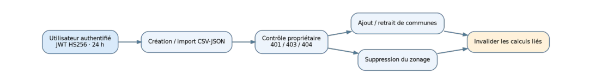
Gestion d’un zonage et invalidation des
résultats devenus obsolètes.
L’inscription utilise POST /user/register ; l’authentification POST
/user/login renvoie un jeton JWT signé en HS256, valable 24 heures. Les
mots de passe sont stockés sous forme de hash bcrypt. Les routes
/user/zones exigent un jeton valide, puis comparent le propriétaire de
la zone avec l’utilisateur authentifié.
Cycle de vie
Un zonage peut être créé à partir d’un nom et de codes INSEE connus,
consulté, enrichi ou réduit, puis supprimé. Une modification de sa
composition invalide les calculs territoriaux auparavant enregistrés
afin d’éviter de restituer des valeurs construites sur l’ancienne liste
de communes.
Le jeton JWT transporte l’identité de l’utilisateur et une date
d’expiration ; il n’est pas une autorisation générale sur toutes les
ressources. À chaque accès à un zonage privé, le service charge l’objet
puis vérifie explicitement l’identité de son propriétaire. Sans jeton,
la réponse attendue est 401 ; pour un autre propriétaire, 403 ; pour une
ressource inexistante, 404. Cette vérification doit demeurer dans la
logique métier même si la route annonce déjà une dépendance
d’authentification.
La modification d’une liste de communes implique une invalidation des
calculs qui en dépendent. Sans elle, une requête identique en apparence
pourrait relire un résultat calculé à partir d’un ancien périmètre. Le
code d’actualisation supprime donc les résultats mémorisés associés au
zonage après une mise à jour ; la suppression de zone entraîne également
un nettoyage. Ce lien entre gestion d’objet et cache est un enjeu de
cohérence plus subtil que la seule capacité à créer une ressource.
19. FO2 et FO3 : Sorties et
imports
FO2 sélectionne le format de réponse via ?format=json (par défaut) ou
?format=csv. La sortie CSV contient zone, mode, period_start,
period_end, value, days_with_data et observed_ratio. En JSON,
DjuResponse regroupe les séries par mode ; DjuZoneResponse regroupe
d’abord les sous-zones puis leurs modes. Si la période a été réduite, le
champ warning est renseigné en JSON ; la réponse CSV du contrôleur n’a
pas de colonne warning, limite à signaler pour son interprétation.
Exemple de table CSV
(données illustratives)
zone
mode
period_start
period_end
value
days_with_data
observed_ratio
point
heating
2020-01-10
2020-01-10
10.0
1
1.0
point
cooling
2020-01-10
2020-01-10
0.0
1
1.0
FO3 permet d’importer un zonage via POST /user/zones/import. Un corps
JSON fournit filename et content, éventuellement name et description. Le
contenu est interprété comme CSV ou JSON selon l’extension du nom de
fichier. Les CSV peuvent contenir une colonne code_insee ou placer les
codes dans la première colonne ; le JSON accepte une liste ou un objet
contenant codes_insee.
Contrôles essentiels
Les codes sont nettoyés, les doublons supprimés et les codes inconnus
explicitement signalés. Le serveur refuse les extensions inattendues,
les contenus invalides et les zonages vides. Ce choix d’import par texte
JSON évite la dépendance python-multipart, mais oblige le client à
transmettre le contenu textuel du fichier.
Le CSV répond au besoin d’exploiter le résultat dans un tableur ou un
logiciel statistique, alors que le JSON conserve un objet structuré
utilisable par un client web ou un script. Le choix du format ne change
pas les valeurs calculées : les deux sorties utilisent les objets
DjuCalculation et DjuResult produits par la même couche métier. Cette
unicité évite de maintenir deux chaînes scientifiques différentes qui
pourraient diverger sur les arrondis, les bornes ou la prise en compte
des trous de données.
L’import de zonages suit l’approche inverse : un ensemble de codes
INSEE arrive sous forme de texte CSV/JSON et est normalisé avant toute
écriture. Les codes vides et les doublons sont éliminés, puis chaque
code restant doit correspondre à une commune de la base. Un import n’est
donc pas seulement un problème de lecture de fichier ; c’est aussi une
opération d’intégrité du référentiel. L’absence de mécanisme multipart
rend la route plus simple à déployer, au prix d’une étape supplémentaire
côté client pour lire le contenu du fichier.
20. Contrats HTTP et
traitement des erreurs
Une API utilisable ne se limite pas à renvoyer des nombres. Elle doit
aussi différencier une entrée invalide, une période sans observation,
une zone inconnue, un manque d’authentification et une tentative d’accès
à une ressource privée. Les schémas Pydantic constituent la première
ligne de validation ; les services relèvent ensuite des ServiceError
converties en réponses HTTP.
Code
Situation documentée
Exemple
200
Calcul ou consultation réussis
POST /dju/point
201
Création de ressource
POST /user/zones
204
Suppression effectuée
DELETE /user/zones/{id}
400
Règle métier impossible
Aucun seuil, dates inversées
401
Authentification absente ou erronée
Accès aux zonages sans jeton
403
Droits insuffisants
Zonage d’un autre utilisateur
404
Ressource ou relevés absents
Zone inexistante
409
Conflit de création
Nom d’utilisateur déjà pris
422
Erreur de schéma
Pas temporel ou coordonnées invalides
La réponse comporte parfois warning lorsque l’intervalle demandé est
plus large que les données réellement disponibles. Ce comportement est
préférable à une extrapolation silencieuse, car il permet au client de
distinguer une période calculée d’une période demandée.
Il reste utile de documenter, dans un client futur, le sens exact de
observed_ratio : il traduit la proportion de journées calculées
exclusivement à partir de relevés observés, et non une mesure
statistique d’incertitude.
Les codes de réponse permettent à un consommateur d’API de savoir si
une correction de sa requête est possible. Un 422 indique un type ou une
valeur incompatible avec le schéma attendu ; un 400 correspond notamment
à une contradiction logique, comme une date de début postérieure à la
fin ou l’absence de seuil. Une réponse 404 peut signaler une zone
inexistante ou aucune station exploitable ; le message d’erreur doit
alors préciser quelle ressource manque, faute de quoi le client ne peut
pas distinguer une erreur de géographie d’une lacune météorologique.
Les avertissements doivent être lus avec la même attention que les
erreurs. Une requête allant au-delà de la dernière observation
disponible peut produire un calcul partiel parfaitement cohérent, mais
celui-ci n’a pas la couverture temporelle demandée. Exposer warning et
days_with_data rend cette situation visible. Pour une exploitation de
résultats, un tableau de bord devrait afficher ces métadonnées à côté
des DJU et éviter de comparer directement deux périodes dont la
couverture n’est pas comparable.
21. Persistance, cache et
performance
Les requêtes territoriales de F3 sont potentiellement coûteuses :
chaque commune requiert une interpolation sur des stations et des dates.
Le service évite les requêtes par commune en regroupant les lectures de
relevés et en vectorisant les matrices date × commune. Il persiste
ensuite seulement les résultats zonaux par configuration de calcul, non
tous les appels de l’API. F1 ne stocke pas ses résultats ; la classe
MunicipalityTemperatureDao n’est pas branchée dans le calcul des
communes.
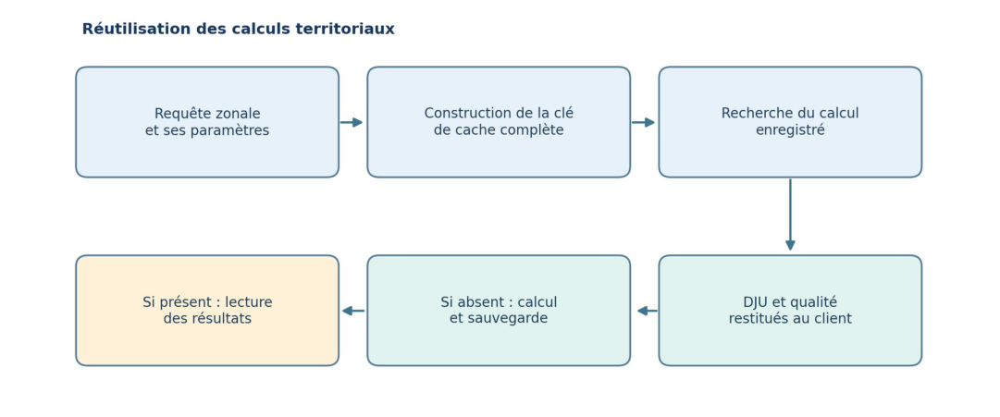
Mécanisme de relecture ou calcul d’un
résultat territorial.
La clé de cache comprend la zone et son identifiant, le type de DJU
(donc le seuil), les dates, le pas de temps, le nombre de stations et la
prise en compte de l’altitude. Les calculs ponctuels, eux, sont
explicitement déclarés « sans stockage » dans DjuService. Une DAO de
températures communales existe, mais son stockage ne fait pas partie du
chemin actif décrit dans TemperatureService.
La vectorisation NumPy/Pandas permet d’estimer les communes par lots
plutôt qu’en relançant chaque fois des requêtes individuelles.
Toutefois, le suivi du 12 novembre demande encore de chronométrer une
région entière et la France : aucune durée cible validée ne peut donc
être annoncée.
La recherche d’un calcul territorial utilise une clé qui incorpore
toutes les variables susceptibles de faire varier le résultat. Oublier
le seuil ou le nombre de stations rendrait le cache faux, même si les
identifiants de territoire et les dates sont identiques. À l’inverse,
relire un calcul réellement équivalent économise les interpolations et
les agrégations. La méthode DjuDao.find_calculation sélectionne le
dernier enregistrement correspondant, tandis que DjuDao.save_calculation
conserve la valeur et ses résultats temporels.
La seule présence d’un cache ne prouve pas une performance
satisfaisante. Pour l’évaluer, il faudrait comparer un premier calcul
sans résultat stocké, un second calcul identique avec résultat présent
et un calcul portant sur une période longue. Les mesures pertinentes
incluraient le temps total, le temps SQL, le nombre de lignes
transférées et l’usage mémoire. Les notes d’équipe identifient
précisément cette mesure à l’échelle d’une région et de la France comme
un chantier prioritaire ; elle reste distincte des optimisations déjà
lisibles dans le code.
22. De la
conception à l’implémentation : écarts expliqués
L’une des leçons du projet est que le dossier intermédiaire décrivait
un objectif ; la branche actuelle documente un état d’implémentation.
Pour ne pas répéter des inexactitudes, la comparaison ci-dessous
distingue explicitement intention, réalisation et conséquence pour
l’utilisateur. Les lignes sont vérifiées dans les services, les schémas
et la définition SQL.
Matrice
d’écarts entre le dossier initial et le code
Intention initiale
État du code inspecté
Conséquence
Cache pour les points et les
territoires
calculate_point_dju() ne
stocke rien ; calculate_zone_dju() utilise le cache
SQL
Ne pas annoncer de persistance générale
pour F1
Températures communales réutilisables
MunicipalityTemperatureDao
existe mais n’est pas utilisée ; table absente dans
init_db.sql
Signaler un cache communal non
intégré
Lecture et édition des zones
officielles
GET /zones fournit la liste
et GET /zones/{zone_type}/{zone_id} le détail
Distinguer liste et détail
Import de fichiers CSV ou JSON
POST /user/zones/import
reçoit filename et content dans du JSON
Ne pas présenter un envoi multipart
Pas quotidiens, mensuels, annuels
Le pas week ISO existe aussi
; de 1 à 10 stations sont admises
Préciser le quatrième pas et les bornes
Pydantic
Estimation sur une période fixe
Intersection avec les dates disponibles ;
warning en cas de réduction
Lire warning et
days_with_data
Nettoyage avec correction saisonnière
Trous courts : linéaire ; 3 à 7 jours :
hybride ; 8 à 30 jours : régression
Décrire uniquement les méthodes
actives
La comparaison est volontairement critique : elle ne dévalorise pas
l’API. Elle met en évidence des choix d’implémentation défendables, des
optimisations effectivement réalisées et des ambitions qui restent des
perspectives. C’est aussi la raison pour laquelle les figures finales
doivent utiliser les noms de méthodes du code plutôt que des objets
abstraits isolés.
23. Stratégie de
tests et couverture fonctionnelle
Le projet sépare ses tests selon trois échelles : objets métier,
services et routes HTTP. Une quatrième suite teste la préparation des
données. Ces tests reposent largement sur des données synthétiques et
des objets factices ; ils vérifient les règles sans exiger en permanence
l’accès à PostgreSQL ni au réseau météorologique.
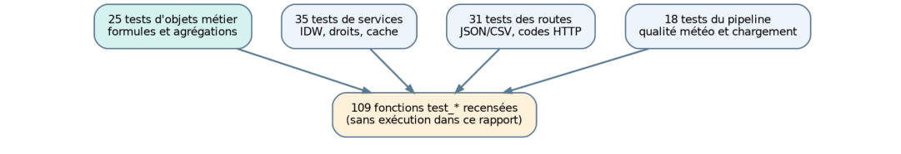
Répartition des fonctions de test
identifiées dans le dépôt.
L’inventaire du dépôt recense 25 fonctions test_* dans
test_business_objects.py, 35 dans test_services.py, 31 dans test_api.py
et 18 dans data/test_data.py : 109 définitions au total. Ce n’est ni un
nombre de tests réussis ni un pourcentage de couverture. Le fichier
etat_des_lieux.md rapporte 87 tests réussis au 3 novembre ; c’est un
constat historique, non une exécution de la version de remise. Des
fonctions paramétrées peuvent produire davantage de cas lors de
pytest.
Ce qui est vérifié
Les assertions portent notamment sur les formules de chauffage et
climatisation, les semaines ISO, la pondération par population, le
comportement avec des trous de données, les corrections altimétriques,
les stations partagées, les erreurs de droits, le cache zonal, les
formats JSON/CSV et les codes HTTP.
Les tests d’objets métier isolent des propriétés mathématiques : un
DJU ne devient pas négatif, les périodes sont correctement bornées et la
population modifie bien la moyenne territoriale. Les tests de services
mobilisent des stations et des relevés simulés afin de vérifier l’IDW,
la correction d’altitude, les dates et le comportement du cache. Les
tests HTTP s’appuient sur TestClient et sur des services de substitution
pour contrôler la sérialisation des réponses et les codes de statut sans
exiger de base opérationnelle.
Les tests du pipeline couvrent d’autres risques, notamment les
températures aberrantes, l’absence de jours entiers, les trous courts ou
longs et la mise en fichier Parquet. Cette complémentarité montre
l’intérêt d’une stratégie structurée plutôt que d’un unique test de bout
en bout. Elle n’élimine pas le besoin d’une campagne d’intégration sur
PostgreSQL alimenté, avec des jeux représentatifs de grands territoires.
La liste de fonctions observée démontre l’existence de tests ; seule
leur exécution dans l’environnement cible pourra attester de leur état
actuel.
24. Validation
numérique et exemples reproductibles
Exemple de DJU journalier
Pour un jour fictif où \(T_{\min} =
4\) °C et \(T_{\max} = 12\) °C,
la température moyenne est de 8 °C. Avec un seuil de chauffage de 18 °C,
le DJU de chauffage vaut \(\max(0, 18-8) =
10\). Avec un seuil de climatisation de 24 °C, le DJU de
climatisation vaut \(\max(0, 8-24) =
0\). Ce résultat ne mesure pas une consommation d’énergie.
Exemple de moyenne
territoriale
Deux communes fictives ont respectivement 1 000 et 3 000 habitants,
et 12 et 8 DJU le même jour. La moyenne pondérée vaut (1 000×12 + 3
000×8) / 4 000 = 9 DJU. Une moyenne simple aurait donné 10 DJU : la
population change donc réellement l’indicateur final.
Cas limites qui comptent
Absence totale de stations sur la période : réponse d’erreur, pas
une série nulle.
Une station sans relevé un jour donné : son poids est exclu du
dénominateur ce jour-là.
Borne de période non complète : agrégation sur les dates
demandées, sans ajouter de jours extérieurs.
Seuil absent pour l’un des modes : seul le mode demandé est
calculé.
Une valeur interpolée dans le calcul : observed_ratio diminue en
conséquence.
Ces calculs illustrent les propriétés vérifiées par les tests
unitaires. Ils ne doivent pas être confondus avec une mesure de
performance ou une validation physique sur données historiques
externes.
Pour vérifier un calcul sans dépendre de toutes les couches, le
protocole le plus simple consiste à préparer un petit tableau de
températures connues, à calculer manuellement les DJU et à confronter
les résultats à DjuType puis à DjuCalculation. On peut ajouter un jour
exactement au seuil, un jour de donnée manquante et une période
traversant deux mois. On obtient ainsi un jeu de tests qui explore les
discontinuités du maximum, les règles calendaires et l’exclusion des
valeurs absentes.
La validation de l’algorithme spatial demande une seconde démarche.
Un exemple à deux stations permet de calculer à la main les poids
inverse-distance ; un exemple avec altitude permet d’isoler le terme
correctif. Un troisième jeu de données retire une observation sur un
jour pour vérifier la renormalisation des poids. Ces tests sont
complémentaires d’un contrôle sur des données physiques réelles, par
exemple comparer la température estimée au relevé d’une station
volontairement masquée. Cette dernière méthode fournirait une estimation
empirique de l’erreur d’interpolation, qui n’est pas mesurée dans le
rapport présent.
25. Assurance
qualité : risques, preuves et priorités
Une API de données n’est fiable que si ses sources, ses calculs et
ses réponses le sont. La seule existence de tests ne suffit donc pas :
il faut préciser la nature de la preuve, les risques encore ouverts et
les mesures qu’exigerait un environnement de production.
Analyse des
risques directement liés au projet
Risque
Conséquence concrète
Prévention ou contrôle
Source Météo-France inaccessible ou format
modifié
F0 ne peut plus mettre les relevés à
jour
Vérification des colonnes, journalisation
et contrôle des dates chargées
Relevés manquants, aberrants ou
montagneux
DJU biaisés et comparaisons
trompeuses
Traçabilité de provenance,
days_with_data, observed_ratio et validation
future
Premier calcul sur un grand
territoire
Latence élevée et forte mémoire
intermédiaire
Vectorisation, chronométrage région/France
et profil SQL à effectuer
Changement de zonage après calcul
Résultats de cache obsolètes
Invalidation des calculs lors de la
modification ou de la suppression
Dépendance PostgreSQL et secrets JWT
Interruption ou accès non autorisé
.env local, contrôle des
droits et stratégie de sauvegarde
Protocole de validation
avant dépôt
Depuis la racine du dépôt, sur un commit figé : (1) lancer python -m
pytest dans api/ et pytest data/test_data.py ; (2) relever les succès,
erreurs et version Python ; (3) capturer deux appels réels à /dju/point
et /dju/zone sur une même période disponible ; (4) chronométrer au moins
un calcul zonal puis le réexécuter pour étudier la relecture du cache ;
(5) confronter figures, schémas et tables aux fichiers source. Sans ces
traces, aucun résultat d’exécution ou pourcentage de couverture n’est
annoncé comme acquis.
26. Installation et
exploitation de l’API
Le dépôt fournit des instructions de lancement reproductibles. Il
requiert Python au moins 3.13, les dépendances décrites par
api/pyproject.toml et des variables d’environnement de PostgreSQL et de
signature JWT. Le fichier .env reste local et ne doit contenir aucun
secret versionné. Les scripts de préparation des données sont lancés
avant le serveur applicatif.
Procédure de bout en bout
Créer un environnement virtuel et installer le projet : python -m
venv .venv puis pip install -e “api[dev]”.
Renseigner POSTGRES_HOST, POSTGRES_PORT, POSTGRES_DATABASE,
POSTGRES_USER, POSTGRES_PASSWORD, POSTGRES_SCHEMA et JWT_SECRET dans
.env.
Exécuter successivement data/meteo.py, data/qualite_meteo.py,
data/communes.py puis data/init_db.py.
Lancer l’API depuis api/src avec python main.py, puis consulter
/docs et /health.
Lancer pytest depuis api/ et tester les scripts de données avec
pytest data/test_data.py.
La documentation interactive Swagger fournie par FastAPI permet de
vérifier les champs disponibles et d’envoyer des requêtes. Dans la
configuration du dépôt, le port Uvicorn par défaut est 5001, modifiable
via l’environnement.
Précautions de
fonctionnement
Le premier chargement peut être long compte tenu du volume brut. Les
tests HTTP n’exigent pas de connexion à la base ; en revanche, une
démonstration complète des calculs réels nécessite des tables PostgreSQL
alimentées. Le journal du 5 novembre signale des ajustements de
reconnexion automatique au serveur distant.
Le fichier .env fournit les informations de connexion SQL, le nom du
schéma, le secret de signature JWT et le port du serveur. La
confidentialité de ce fichier est essentielle : un mot de passe
PostgreSQL ou une clé JWT publiés dans le dépôt compromettraient le
contrôle des accès. Les variables doivent être différentes entre
environnement local, démonstration et déploiement. La documentation de
lancement indique l’ordre des scripts et permet à un tiers de reproduire
la chaîne, sous réserve de disposer des autorisations et des volumes de
stockage nécessaires.
L’outil Swagger documente automatiquement les champs de requête et
les structures de réponse, mais une procédure d’exploitation doit aussi
décrire les prérequis de données. La présence des tables ne suffit pas
si elles sont vides ; il faut vérifier la couverture temporelle, la
liste des stations et les territoires effectivement chargés. Pour
diagnostiquer une démonstration, on peut vérifier successivement
/health, la liste des zones, puis une requête ponctuelle courte sur une
période connue. Cette démarche localise plus facilement un problème de
démarrage, de connexion, de référentiel ou de relevés.
27. Limites, perspectives et
conclusion
Limites reconnues
Les performances sur un calcul national et sur une région complète
restent à mesurer ; elles ne doivent pas être déduites de la seule
vectorisation. La distance géographique et un gradient altimétrique
constant ne suffisent pas à reproduire tous les microclimats. Le
traitement des séries incomplètes limite les valeurs artificielles, sans
garantir une estimation exacte. Enfin, le cache de températures
communales envisagé dans le dossier intermédiaire n’est pas intégré au
flux actuel, et F1 reste non persisté.
Améliorations raisonnables
Mesurer temps de réponse, consommation mémoire et nombre de
requêtes SQL pour une région et pour la France.
Tester un indicateur de couverture de données plus complet et
documenter les effets du comblement sur les résultats.
Raccorder ou supprimer la DAO de cache communal afin d’éviter une
documentation ambiguë.
Ajouter la recherche des communes par nom et l’ajout groupé de
départements/régions aux zonages.
Mettre à jour les diagrammes en fonction de l’implémentation
stabilisée, puis lancer la suite de tests avant le dépôt.
Conclusion
En trois mois, l’équipe est passée d’une formule de DJU et d’archives
météorologiques à une API multi-couches capable d’interroger des points
et des territoires, de gérer des zones privées et de restituer des
résultats traçables. Le gain principal réside dans la chaîne complète :
préparation des données, interpolation, calcul, contrôles, persistance
et tests. Le travail restant relève désormais surtout de la mesure, de
la clarification documentaire et de la consolidation de certains
mécanismes de cache.
Le projet a montré que la complexité d’une API scientifique se situe
moins dans la formule finale que dans ses conditions d’application. Les
données météorologiques sont hétérogènes ; les zones comportent des
milliers d’unités ; les paramètres changent le sens du résultat ; les
utilisateurs doivent être isolés ; enfin la performance dépend de la
réutilisation des calculs. La version finale est donc jugée autant sur
la cohérence de ces interfaces que sur l’existence de chaque route.
Avant la remise définitive, un protocole de clôture devrait réunir
cinq vérifications : exécuter la suite de tests sur la version figée ;
tester les routes principales contre la base représentative ;
chronométrer au moins un calcul territorial long ; rapprocher les
schémas des signatures et tables courantes ; relire les remarques
annotées du professeur. Ces contrôles ne supposent pas de nouveaux
modules métier, mais ils conditionnent la fiabilité des conclusions. Ils
constituent des prolongements réalistes d’un projet dont les
fonctionnalités principales sont déjà implémentées.
Annexe A :
Sources, conventions et vérifications
Sources de référence
[S1] Sujet DJU fourni dans « présentation DJU.docx.pdf »
(contexte, calculs, qualité et références de données).
[S2] Dépôt GitHub équipe 12 :
github.com/gabriel-dahan/ensai-it-project-2a-team12 (main, consulté le
15 novembre 2026).
[S3] README.md, api/README.md, api/src/, data/ et
data/init_db.sql du dépôt.
[S4] Rapports de suivi doc/tracking/2026.11.05-week9.md et
2026.11.12-week10.md.
[S5] Rapport intermédiaire « rapport_analyse_équipe_12_annoté.pdf
», annotations de Thierry Mathé (septembre 2026). Consigne officielle :
ludo2ne.github.io/ENSAI-2A-Projet-info/doc/french/projet/notice-eleves.html.
[S6] Rapports modèles fournis par l’enseignant : Vélib’ Hunter
(équipe 29, 2023) et Cinégram (équipe 31, 2024–2025), consultés pour la
structure et la présentation des démonstrations.
Petit glossaire
Terme
Définition
DJU
Écart thermique journalier non négatif,
cumulé dans le temps
IDW
Pondération inverse de la distance
(Inverse Distance Weighting)
DAO
Couche de lecture et écriture des données
(Data Access Object)
JWT
Jeton signé pour authentifier les
utilisateurs
Parquet
Format de stockage tabulaire
colonnaire
Observé
Valeur issue de données non estimées ou
interpolées
Contrôles à effectuer
avant le dépôt
Annexe B.1 : Note
individuelle : Aziz Yousfi
Proposition de rédaction personnelle fondée sur les journaux du
projet : à relire, compléter et valider par son auteur avant remise.
Contributions dont je
peux rendre compte
Le suivi de projet me rattache aux premières recherches de sources, à
la modélisation, puis à la mise en place des objets métier. Lors de la
phase d’intégration, j’ai refondu le calcul dans DjuCalculation : run()
reçoit une série quotidienne estimée et run_for_zone() construit des DJU
agrégés par population. J’ai également contribué aux tests des objets
métier.
Difficulté
technique et prise de recul à approfondir
La cohérence mathématique entre calcul unitaire, agrégation
temporelle et agrégation territoriale constitue un point sensible. Le
choix de pondérer par les habitants plutôt que de faire une moyenne
simple modifie réellement le résultat ; les cas de communes sans
population ou de journées incomplètes doivent donc être explicitement
définis et testés.
Éléments personnels
restant à valider
À confirmer personnellement : un exemple de coordination avec la
partie météo / DAO, une difficulté précise résolue pendant les tests, un
choix que je ferais différemment.
Annexe B.2 : Note
individuelle : Eudes Sterlin
Proposition de rédaction personnelle fondée sur les journaux du
projet : à relire, compléter et valider par son auteur avant remise.
Contributions dont
je peux rendre compte
Les suivis indiquent que j’ai participé à la mise en place du point
d’entrée de l’API et des premières routes au démarrage, puis au
développement de dju_dao.py et à l’évolution de init_db.sql. En
novembre, j’ai révisé le schéma SQL, actualisé des diagrammes et
consigné un état des écarts entre la conception et l’implémentation dans
etat_des_lieux.md.
Difficulté
technique et prise de recul à approfondir
Le principal enjeu technique de ce périmètre est de synchroniser la
structure des tables, les requêtes DAO et le moteur de calcul. Une
colonne absente ou un schéma de réponse obsolète peut rendre inopérante
une fonctionnalité pourtant présente dans le code. Le contrôle de ces
interfaces et la traçabilité des corrections ont donc une portée
fonctionnelle et pas seulement documentaire.
Éléments personnels
restant à valider
À confirmer personnellement : un problème SQL ou de coordination
réellement rencontré, la façon dont l’équipe l’a résolu et mon
apprentissage le plus important.
Annexe B.3 : Note
individuelle : Gabriel Dahan
Proposition de rédaction personnelle fondée sur les journaux du
projet : à relire, compléter et valider par son auteur avant remise.
Contributions dont
je peux rendre compte
Les comptes rendus me rattachent à la structure du dépôt, à
l’environnement Python et à la documentation initiale. En octobre, j’ai
traité des blocages de démarrage et homogénéisé les réponses d’erreur.
En novembre, j’ai contribué à la mise en œuvre des routes et services
pour les DJU ponctuels et zonaux, les zones officielles et
personnalisées, les comptes et l’import, ainsi qu’au cache zonal et à
l’export CSV.
Difficulté
technique et prise de recul à approfondir
L’intégration des parcours HTTP met en évidence la nécessité de
séparer trois responsabilités : validation des requêtes, orchestration
métier et persistance. Une route correctement définie ne suffit pas si
les services attendent d’autres noms de champs ou si les DAO ne
retrouvent pas les tables alimentées. Les contrôles 401/403/404/422 et
les tests de contrôleur sont particulièrement utiles pour limiter ces
défauts.
Éléments personnels
restant à valider
À confirmer personnellement : l’incident d’intégration le plus
marquant, la coopération entre modules et une amélioration réaliste du
processus.
Annexe B.4 : Note
individuelle : Gwenaël Lassalle
Proposition de rédaction personnelle fondée sur les journaux du
projet : à relire, compléter et valider par son auteur avant remise.
Contributions dont
je peux rendre compte
Les comptes rendus mentionnent des recherches sur les sources de
données et le référentiel communal, la rédaction de l’introduction et de
parties du dossier d’analyse, puis l’actualisation des figures. Le suivi
du 5 novembre m’attribue aussi la reprise du rapport final et de sa mise
en page, ainsi que le chargement dans PostgreSQL distant d’environ 4 555
stations et 32 millions de relevés.
Difficulté
technique et prise de recul à approfondir
Ce rôle relie un enjeu d’exploitation à un enjeu de restitution : des
sources volumineuses doivent être réellement chargées avant les tests
métier, et les schémas doivent représenter les transformations
observables plutôt que seulement les intentions initiales. Une
difficulté à analyser est la gestion des connexions à PostgreSQL lorsque
le serveur distant clôt une session.
Éléments personnels
restant à valider
À confirmer personnellement : les difficultés exactes du chargement
distant, le retour d’expérience sur la rédaction et une leçon de
collaboration.
Annexe B.5 : Note
individuelle : Marceau Feral
Proposition de rédaction personnelle fondée sur les journaux du
projet : à relire, compléter et valider par son auteur avant remise.
Contributions dont
je peux rendre compte
Le suivi me rattache à la constitution et au nettoyage des données
météorologiques, à la gestion des valeurs manquantes, aux scripts de
chargement et à la couche DAO initiale. Au début de novembre, j’ai
travaillé à la chaîne meteo.py, qualite_meteo.py, communes.py puis
init_db.py et à la vectorisation de l’estimation des températures et des
calculs sur les communes avec NumPy et Pandas.
Difficulté
technique et prise de recul à approfondir
Les lacunes de température constituent une difficulté scientifique
autant que logicielle. Le choix du comblement dépend de la durée du trou
et de la disponibilité de stations voisines ; les données estimées
doivent conserver leur provenance pour ne pas être présentées comme des
mesures brutes. Pour les calculs territoriaux, la vectorisation évite de
répliquer inutilement les mêmes lectures de relevés.
Éléments personnels
restant à valider
À confirmer personnellement : un cas réel de donnée aberrante
difficile à traiter, une difficulté de performance rencontrée et une
méthode de travail à reprendre.